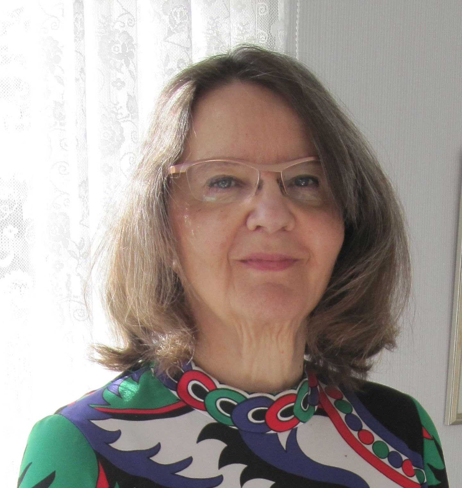
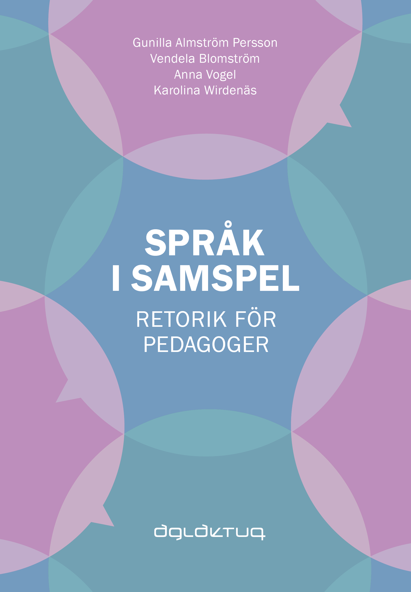
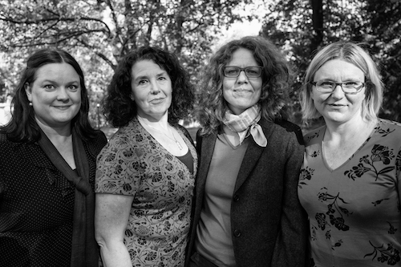
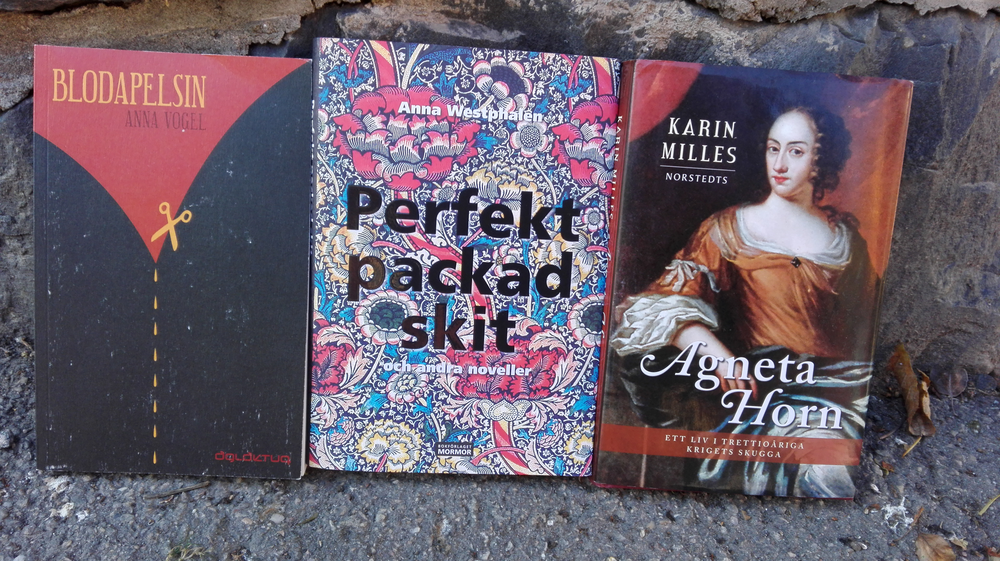
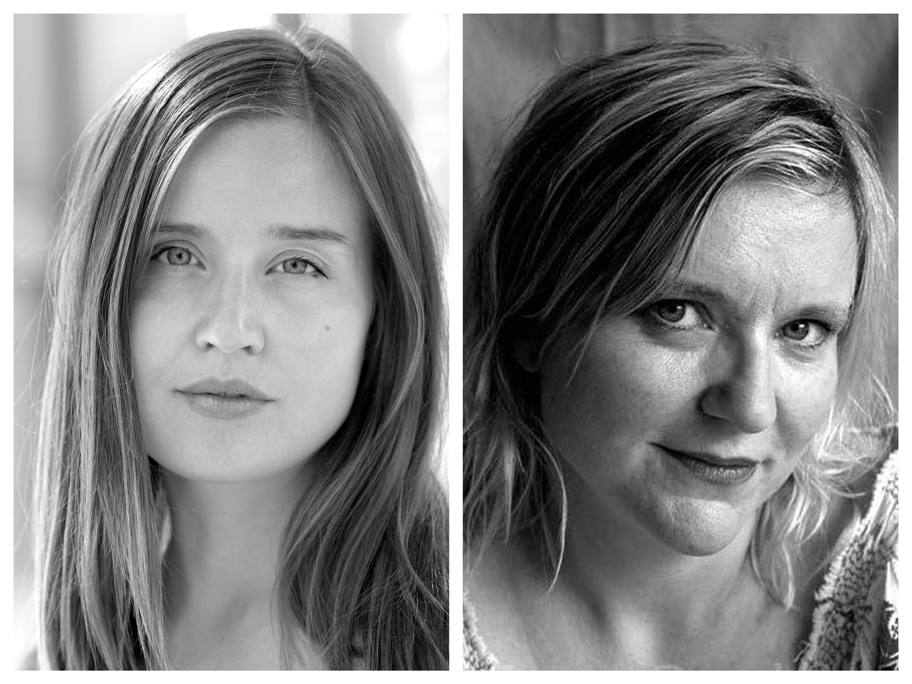
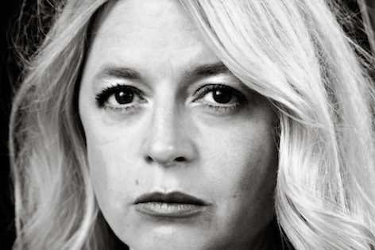

Vill du berätta om hur arbetet med JE SUS (eller hur ska man leva) startade? Hur fick du idén? En sommardag satt jag i en skuggig trädgård och läste Markusevangeliet. Tidigare hade alla mina försök att tränga in i
den religiösa ideologin slutat med att jag la ifrån mig bibeltexterna. Men den här gången upptäckte jag hur anmärkningsvärt
porträttet av Jesusfiguren är; hur omogen och humörsjuk han verkar, hur starkt han önskar att sätta spår efter sig i världen
– plötsligt såg jag hur mänsklig han är, och hur intressant han är, i kraft av sina starka motsättningar och olösliga konflikter.
Var det en text som du skrev i ett enda stycke eller redigerade du den mycket? Jag skrev texten i ett svep sommaren 2013. Det var en poäng för mig att skriva den i ett stycke, jag märkte att jag inte
visste vilken genre jag skrev i – var det en kortroman eller var det en experimentell essä? Det var bägge delar, och denna
dubbelhet ville jag utnyttja genom att skriva texten sammanhängande, utan stora avbrott. Jag lät texten ta utgångspunkt
i en önskan om överskridande, omvälvning, hängivenhet; den typen av emotionella drivkrafter som jag hade identifierat mig
med när jag läste Markusevangeliet den där sommardagen.
Hur skulle du säga att JE SUS (eller hur ska man leva) förhåller sig till Berättelse om ett äktenskap? Jag skrev texten JE SUS (eller hur ska man leva) först, och direkt efter började jag skriva Berättelse om ett äktenskap.
Båda har ett emotionellt tryck, de skriver fram ett slags desperation som jag önskade och fortfarande önskar utforska.
Köp JE SUS (eller hur ska man leva) här:
Intervju med översättaren av JE SUS (Geir Gulliksen) Eva Ström
180217

Det var du som föreslog att boken skulle översättas för förlaget. Hur upptäckte du boken? Jag fick boken skickad till mig från det norska förlaget. Jag fäste mig vid berättelsen, vid språket. Det var genomskinligt
och naket, det talade om en sådan oerhörd smärta. Språket var så enkelt, men samtidigt rymde det en stor gåta. Texten väckte
min lust för att översätta texten.
Vad menar du att boken handlar om? Den handlar på ett plan om en man som hade varit med om ett stort kärlekstrauma, som jag förstår det. I denna utsatta situation
söker mannen något att läsa, något som lindrar. Han börjar läsa Markusevangeliet utifrån sitt trauma, och då ser han den
oerhörda ensamheten som finns i Jesusgestalten. Det som fångar honom där är när Jesus avsäger sig sin familj. Det andra
planet är hur mannen utforskar Jesus övergivenhet.
Hur var det att översätta texten? Jag var tvungen att vara enormt uppmärksam på vartenda ord, till och med på skiljetecken. Jag fick hålla andan
ibland när jag översatte den. När jag hade gjort den första översättningen med hjälp av lexikon arbetade jag tillsammans
med Anna, som är bokens förläggare och redaktör. Vi läste den norska och den svenska texten ihop, mening för mening. Det
var nästan som att vi tog en stämgaffel och lyssnade på tonen i varje mening. Vi svenskar kan bli förförda av det norska
språket, vi känner att där finns en poetisk enkelhet, den är ren och nytvättad, den strålar av ett slags fräschör. Jag
ville behålla den känslan, men på svenska, och att det skulle låta naturligt. Det var på sommaren, vi satt vid ett stort
bord på landet, vi satt där och lyssnade, lyssnade, lyssnade oss igenom boken. Vi upplevde båda att det var värdefullt
att jobba med texten högt på det sättet.
Kom du närmare texten genom att översätta den? Ja. Jag upplevde den ännu starkare. Men den blev inte mindre gåtfull.
JE SUS (eller hur ska man leva) av Geir Gulliksen
180105
I mars släpper Aglaktuq Geir Gulliksens kortroman JE SUS (eller hur ska man leva) översatt från norska av Eva Ström.
JE SUS (eller hvordan leve) skrevs som ett beställningsverk till Møllebyen Litteraturfestival och är en beskrivning av en
man i kris som läser Bibeln och får syn på en helt annan sorts Jesus än han tänkt sig.
För realtidsinfo om var på stationerna Karin kommer att stå och läsa ur Benitosommar, kolla vårt
twitterkonto!
Tiden är 18.00 varje tisdag och stationerna är:
Ropsten 21 mars
Östermalmstorg 28 mars – i samarbete med Sture Bibliotek
Slussen 4 april
Hornstull 11 april – i samarbete med Akademibokhandeln
Norsborg 18 april
Maratonläsning längs röda linjen
170301
Snart släpper Karin Ström sin nya roman
Benitosommar, en bok om gränslös vänskap och högtryck som löser upp alla regler. Välkommen på premiärläsning i Ropsten
21 mars 18.00!
Högläsningsturné i t-banan
170228
Under fem tisdagar i rad kommer Karin Ström läsa högt ur sin nya roman Benitosommar på utvalda stationer längs röda linjen.
Romanen kommer att läsas upp från början till slut, en femtedel åt gången, med start 18.00 varje tisdag. Stationerna som
besöks är:
Ropsten 21 mars
Östermalmstorg 28 mars – i samarbete med Sture Bibliotek
Slussen 4 april
Hornstull 11 april – i samarbete med Akademibokhandeln
Norsborg 18 april
Benitosommar är Karin Ströms fjärde roman och släpps som pappersbok och e-bok den 6 april.
Fina recensioner av Språk i samspel!
161219
Vår nya lärobok i retorik, "Språk i samspel. Retorik för pedagoger" som släpptes 15 december
(köp den här!)
har redan fått fina omdömen av verksamma lärare.
Björn Kohlström, gymnasielärare i engelska och svenska och kanske mer känd under sitt
alias Bernur, skriver på sin
blogg: "Vem ska läsa? Lärare, ja, men främsta syftet är att använda den i lärarutbildningen.
Det vore väldigt passande. Min egen lärarutbildning innehöll väldigt lite av praktiska diskussioner
i detta ämne (och desto mer av abstrakta resonemang i pedagogikens luftigaste luftslott).
Även för rutinerade lärare finns det en hel del att plundra den här boken på."
Tony Axelsson,
ämneslärare i spanska och historia, skriver på Instagram:
"Den är mycket användbar för alla blivande och verksamma lärare,
den fyller en viktig funktion då retorik och social kompetens med
allt vad det innebär spelar minst lika stor roll som ämneskunskaper."

Ny lärobok i retorik för pedagoger
15 december 2016 kommer ”Språk i samspel. Retorik för pedagoger” av Vendela Blomström, Gunilla Almström Persson, Karolina
Wirdenäs och Anna Vogel. Boken vänder sig till studenter inom lärarutbildningen, till redan verksamma lärare och pedagoger
samt till andra intresserade.
I läroboken introduceras, fördjupas och kombineras två olika perspektiv på språk och samspel i skolans värld, nämligen ett
retoriskt perspektiv och ett samtalsperspektiv. Perspektiven syftar till att dels ge en fördjupad syn på olika kommunikativa
situationer i förskolan, grundskolan och gymnasieskolan, dels göra läraren medveten om vilka redskap som finns att dra
nytta av.
Under arbetets gång har manuset provats ut i undervisningen, och det har förändrats och bearbetats utifrån de synpunkter
som studenter och undervisande lärare har lämnat. Några studentröster om boken:
”En bok som väldigt tydligt förklarar och instruerar dig i hur du kan bli en bättre talare.” ”Bra, informativ och relevant
för läraryrket.” ”Boken har tydliga exempel och ett språk som inte är tillkrånglat.”
Författarna undervisar på kurser i retorik och muntlig framställning inom lärarprogrammet vid Stockholms universitet. Dessutom
är de verksamma som forskare och författare inom retorik, samtal, interaktion i lärandesituationer och mönster för text
och tal.
ISBN tryckt bok: 978-91-639-2088-2 ISBN e-bok: 978-91-639-2089-9
Boken kommer att säljas i Akademibokhandeln, Adlibris och Bokus. Du kan redan nu förhandsbeställa boken genom att skicka
ett e-brev till info@aglaktuq.se.

Från vänster till höger: Vendela Blomström, Gunilla Almström Persson, Karolina Wirdenäs och Anna Vogel.
Litterär salong
Välkomna på litterär salong där Karin Milles, Anna Vogel och Anna Westphalen läser ur och samtalar om sina böcker. Teman
som sexualitet, frihet och kreativitet kommer att behandlas. Försäljning av böcker till förmånligt pris.
Var? Vällingby bibliotek. När? Lördag 26 november kl. 14.00. Ingen föranmälan, fri entré.
Välkomna till Ett eget rum 13 oktober!


Vi har blivit inbjudna till samtalsserien Ett eget rum för att prata om systerskap, do-it-yourself-rörelsen och att växa
upp i Kristianstad. Samtalsledare är Åsa Maria Hellman och platsen är Kulturkvarterets kafé, Kanalgatan 30, Kristianstad.
Samtalet börjar klockan 18.00. Fritt inträde. Ta gärna en fika eller en öl medan ni lyssnar.
Välkomna på Litterär Salong!
Lördagen 31 januari 2015 bjuder vi in till Litterär Salong hemma hos Anna på Södermalm i Stockholm. Fem författare läser
nytt material i en intim miljö.
Författarna är Negar Naseh, Ann-Marie Tung Hermelin, Alberte Bremberg, Anna Vogel och Karin Ström.
Efter uppläsningen blir det en kortare paneldiskussion om PLATSEN, en laddad plats som man utforskar i sitt skrivande. Vi
bjuder på vin och enklare tilltugg.
Osa senast torsdag 29 januari till
anna@aglaktuq.se. Då får du också adress och portkod.
Välkomna!
"En nyfikenhet utan skuld"
Idag är vi otroligt glada över Ann Heberleins
hyllning av Blodapelsin i Sydsvenskan:
"Den yttre berättelsen är en historia om vänskap, om Emmas längtan efter bekräftelse och symbios, om Ninas ganska egoistiska
utnyttjande av Emma. (---) Det finns också en annan berättelse i Vogels roman, och jag undrar om inte den är angelägnare.
Den är definitivt mer originell. Egentligen är det inte Emma och Nina och deras komplicerade vänskapsrelation som är
romanens ärende, utan sexualiteten. Vogel skildrar en ung kvinnas gryende sexualitet på ett sätt jag aldrig stött på
tidigare."
Se även tidigare recensioner av
Bernur:
"För Blodapelsin är en ovanligt djärv roman, som lever tack vare Vogels stilkänsla, som skriver fram miljön utan att förlita
sig på stora åthävor" och av Anna Carlén på
dagensbok.com: "
Någonting pulserar i Anna Vogels bok. Det är inte är bara blodet, utan också meningarna som försöker hitta ett sätt att
bli sams med tillvaron."
Välkomna på Blodapelsins releasefest!
Torsdagen den 3 april 18:30 bjuder vi in till releasefest på Sture bibliotek, Östermalmstorgs t-banestation i uppgången
mot Stureplan (dörrarna låses kl 19:00).
Det blir läsning ur Blodapelsin av Anna Vogel, livemusik av Anja Bigrell, panelsamtal med litteraturvetare Katarina Carlshamre,
filmkritiker Isabelle Espinoza och låtskrivare Anja Bigrell, och läsning ur Stamtavla av Karin Ström. Vi bjuder på ett
glas vin och ett smakprov av
Lorina blodapelsinlemonad.
För att klara Bechdeltestet ska en film ha minst två kvinnliga karaktärer som talar med varandra om något annat än män.
Testet fick stor uppmärksamhet i höstas när "A-märkningen" lanserades. Men testet har faktiskt sitt ursprung i litteraturen:
en passage i Virginia Woolfs "A room of one's own" (1929), där Woolf påpekar hur sällan två kvinnliga karaktärer i böcker
framträder utan att relateras till män.
Om Bechdeltestet skulle användas på litteratur skulle Blodapelsin klara testet. Är det önskvärt att använda Bechdeltestet
på litteratur? Hur bör det i så fall problematiseras och modifieras? I samband med Aglaktuqs release för Blodapelsin av
Anna Vogel bjuder vi in till en kväll med läsning, livemusik och samtal. Möjligheter att köpa Blodapelsin till förmånligt
pris (endast kontanter). Osa senast 2 april till
info@aglaktuq.se.
Blodapelsin – ny roman från Aglaktuq
"När jag syr en raksöm på maskinen och allt stämmer. När motorn smattrar sitt jämna ljud. Då kan jag känna en ilning i mig.
Som om jag hade en rytm där. Jag undrar om den rytmen kan komma ut. Upp i huvudet, ut i händerna, ner i fötterna. Så att
den är med mig i uppehållsrummet och i matsalen. Och när jag träffar Nina nästa gång."
Emma går ut nian i en skånsk småstad under mitten av 80-talet. Hon är trött på sina trista vänner och på att stå och frysa
utanför diskot på fredagarna. Då möter hon den svartklädda Nina, som verkar fri och annorlunda. Men vänskapen visar sig
bli komplicerad.
Från miniatyrförlaget Aglaktuq kommer en ny roman för vuxna och unga vuxna. Boken skildrar Emmas kreativitet, sexualitet
och sökande efter identitet, i en tid före Facebook och mobiltelefon, i en tid när tåget stannar i Malmö och man tar flygbåten
över till Köpenhamn.
Anna Vogel debuterade skönlitterärt 2010 med relationsromanen Den ryska sjalen, som togs emot fint i press och bland läsare.
Blodapelsin kommer som pappersbok och e-bok 3 april. Beställ recensionsex i form av pappersbok eller e-bok
här och ladda ner pressbilder
här. Boken distribueras via Publit till fysiska bokhandlare och nätboklådor. ISBN-nr: 978-91-979068-9-0.
Andra upplagan av Tidebok är här
Första upplagan av Tidebok är helt slutsåld och nu andra upplagan klar! Köp den på
Bokus eller direkt från
oss.
Tidebok nominerad till Katapultpriset
Idag är vi enormt glada över att kunna rapportera att Alberte Brembergs roman
Tidebok har blivit nominerad till Katapultpriset för bästa debutroman 2013 av Sveriges författarförbund.
De andra nominerade är Pål Börjesson med romanen
Gallus, Carl Forsbergs Bokförlag, Athena Farrokhzad med diktsamlingen
Vitsvit, Albert Bonniers Förlag, Anna Fock med romanen
Absolut Noll, Ersatz, Patrik Godin med romanen
Gimokrönikan, Albert Bonniers Förlag, och Josefin Holmström med romanen
Antarktis, Norstedts Förlag.
Vinnaren utses den 15 januari 2014. Läs mer på Sveriges författarförbunds
hemsida.
Första upplagan är i skrivande stund helt slutsåld och vi jobbar febrilt med att få fram en ny!
Hyllning av Tidebok på dagensbok.com
"Det är en historia berättad i detaljer. En historia som gör ont. Som handlar om människor. En historia som handlar om mig.
Om oss. Om nuet. Som angår." Anna Nygren anmäler idag
Tidebok med en väldigt fin recension på
dagensbok.com.
Starta eget förlag – hur gör man?
Har du funderat på att ge ut dina egna eller andras texter? Kom till vårt seminarium om att starta förlag! Kristofer Andersson (
Throw Me Away) pratar om sin nya bok
DIY (Modernista) och gör-det-själv-kulturen i Stockholm just nu. Vi berättar om hur det gick till att starta Aglaktuq, sen
är frågan fri.
Tid: Söndagen 7 april kl 14-16. Plats: Medborgarplatsens bibliotek. Föranmäl er gärna på
info@aglaktuq.se. I samband med anmälan vill vi gärna att du mejlar en fråga som du vill att vi tar upp. Seminariet
är gratis.
Nya recensioner av Tidebok
Alberte Brembergs
Tidebok har fått två fina recensioner i veckan som gått:
”Det är minnesfragment i dess mest oförstörda form, frikopplat från kronologi och rum men paradoxalt nog då också i dess
mest raffinerade form” skriver ÅM Hellman i
Kristianstadsbladet 15 mars.
”Bremberg visualiserar, har bilderna på näthinnan. Av dessa skapar hon scener. Därefter sätter hon ord på sina inre bilder
och uttrycker dessa med stor precision skriver Eva Elmgren i Borås Tidning 16 mars.
Välkomna på litterär salong den 11 april!
Aglaktuq är mycket stolta att presentera vår nästa litterära salong torsdagen den 11 april på Medborgarplatsens bibliotek.
Medverkande, förutom vår egen Alberte Bremberg, är Steinar Opstad och Marie Lundquist.
Steinar Opstad, född 1971, är en av Norges främsta poeter. Han debuterade 1996 med
Tavler og bud (Kolon Förlag) som blev hyllad av kritikerna och har sedan dess mottagit en mängd priser. Återkommande
teman i Opstads poesi är tro och tvivel, tillhörighet och utanförskap, sexuell identitet och arvsrätt. Senast utkom
Den lyckligaste av alla ensamheter (Ellerströms 2012) i översättning och urval av Marie Lundquist, med fokus på Opstads
senare produktion och med ett antal nya, tidigare opublicerade dikter.
Marie Lundquist är poet, författare, dramatiker, översättare och kulturskribent. Hon är född 1950 och debuterade 1992 med
den uppmärksammade
Jag går runt och samlar in min trädgård för natten (BonnierAlba). Sedan dess har hon gett ut nio böcker: flera prisade
diktsamlingar, men även berättelser och essäer. Marie kommer dels att läsa egna texter, och dels sina översättningar av
Steinar Opstads lyrik från
Den lyckligaste av alla ensamheter.
Alberte Bremberg, född 1970, är verksam som författare, kulturskribent och översättare med nordisk inriktning. Hon debuterade
2012 med
Tidebok (Aglaktuq). Björn Kohlström anmälde boken på sin blogg Bernur: Samtidigt är det att våldföra sig på händelserna
när vi sätter ihop det till en berättelse, och bland annat därför tycker jag att Brembergs bok är så lyckosam, att hon
smidigt undviker den lockande fällan. För hon sysslar inte med den typen av ihopfogning, utan låter minnet förbli splittrat
och sprucket.
Salongen börjar 18.30 på Medborgarplatsens biblioteks övervåning och det är fri entré. Det kommer även att finnas möjlighet
att köpa böckerna det läses ur. Välkomna!
Hyllning av Bernur!
Idag, på
Tideboks första recensionsdag, hyllar Bernur, alias Björn Kohlström, boken på sin
blogg:
”Samtidigt är det att våldföra sig på händelserna när vi sätter ihop det till en berättelse, och bland annat därför tycker
jag att Brembergs bok är så lyckosam, att hon smidigt undviker den lockande fällan. För hon sysslar inte med den typen
av ihopfogning, utan låter minnet förbli splittrat och sprucket.”
Tidebok av Alberte Bremberg
”Det är väl med pärlorna som med frimärkena. De gör sig bäst i sammetsklädda askar, och som en hänvisning till adressatens
mantalsskrivna ort och land.”
Tidebok är en uppgörelse med historiens påträngande röster och en bön om befrielse. Ur familjealbumen, böckerna och
filmerna stiger de döda och pockar på uppmärksamhet. Det sedan länge förträngda lever sitt eget liv, bland alla artefakter
som omger en människa. Det förlutna tränger sig på och ömsom hjälper, ömsom trasar – en kamp i nio cirklar.
Utgivningsdag: 31 januari. Kommer även som e-bok och ljudbok.
För recensionex, skriv till
press@aglaktuq.se. För högupplösta porträtt på Alberte, klicka
här. För högupplöst bild på omslaget, klicka
här. Uppstår det några problem med nedladdningen, kontakta oss på
press@aglaktuq.se.
Nu går Aglaktuq från egenutgivning till att också ge ut andra författare. Det var Alberte Brembergs manus
Tidebok som fick förlaget att ändra sig.
– Vi kände ett så starkt släktskap med Brembergs manus att vi bara måste ge ut det. Det känns fantastiskt att stå som avsändare
för hennes debut, säger förläggare Anna Vogel som driver förlaget med Karin Ström och Agnes Stenqvist.
Enligt Svensk Ordbok betyder tidebok "en krönikeartad historisk framställning av viktigare inträffade händelser". Romanen
Tidebok handlar om förutsättningarna för det egna livets existens. Den är en skönlitterär uppgörelse med historiens
påträngande röster och en bön om befrielse från tyngden av glömda erfarenheter.
Alberte Bremberg är född 1970 och frilansar som journalist och översättare med nordisk inriktning. Hon har gått Biskops
Arnös skrivarskola och har även universitetsexamina i filmvetenskap och journalistik. På
alberteb.blogspot.se publicerar hon krönikor av friare karaktär. Alberte är aktuell på Bok och Biblioteksmässan som
moderator för samtalen
Minne och glömska mellan Merethe Lindstrøm och Gaute Heivoli torsdagen den 27 september 14.00 och
Arvet efter Eddan med Erland Loe och Sjón lördagen den 29 september 11.00. Tidebok kommer i januari 2013.

Foto: Christina Ottosson Öygarden. Bilden får publiceras fritt i samband med redaktionell text om
Tidebok, Alberte Bremberg och Aglaktuq. För högupplöst version, gå in på på
www.aglaktuq.se/press.
Vi är nominerade till SvB:s bokvideopris!
Trailern till
Audition har blivit nominerad till SvB:s bokvideopris för bästa trailer. Lägg din röst på
www.svb.se/bokvideotavling2012!
Audition släpps den 21 september till iBooks, Bokus, Dito,
här på sidan och i vår widgetshop på
Facebook. Den kommer att kosta 9 kronor, som en iTunes-låt, och den går enkelt att både och köpa och läsa direkt i
telefonen.
Novellen utspelar sig i New York och handlar om skådespelerskan Katya Piechowski som kämpar för att få igång en avstannad
karriär och samtidigt förhålla sig till en frånvarande pappa. Ett utdrag ur novellen kan du läsa
här.
Novelltrailer
I september släpper Aglaktuq sin första digitala novell,
Audition av Karin Ström. Se trailern redan nu!
Aglaktuqs uttalsskola
Vi får ofta höra att Aglaktuq är ett svårt namn, både att stava och att uttala – senast i raden var det ViLÄSERs Johan Eklöf
som menade att namnet var
hopplöst svåruttalat. Men det är inte alls svårt, lyssna bara på vår lilla uttalsskola och upprepa efter rösten!
Aglaktuq betyder ”skriver” på inuitspråket inupiatun som talas av runt 2000 personer i norra Alaska. Vi valde namnet för
att det var det vackraste ordet för skriva vi kunde hitta.
Varför skriver Maria Zennström?
Aglaktuq är ett förlag som springer ur skrivlust, och bygger på idén om att inte låta något hejda den. Som en hyllning till
skrivlusten presenterar vi därför en blogg där andra författare berättar om varför de skriver – om sin skrivlust, eller
kanske sitt skrivberoende.
Bloggen ska pågå i ett år och är utformad som en stafett, där den första författaren väljer nästa. Först ut är Maria Zennström
– här ett utdrag från hennes bidrag:
Jag är kanske en översättare, är inte det mitt verkliga kall, en tolk, men en självständig sådan, jag vill tolka som jag
finner det bäst, mest effektfullt, jag vill slå mynt av gränsen och skillnaden mellan kulturerna, jag har en idé om Ryssland
som mitt sagoland, en sorts lekstuga för mig, en plats där mina drömmar förverkligas utan ansträngning, eller där jag
redan har allt jag behöver.
Bloggen kommer att uppdateras varannan tisdag med start 12 april och ha adressen
blogg.aglaktuq.se
Bokvideor
Regissören Louise Linde har gjort två bokvideor till
Den ryska sjalen respektive
Våld som premiärvisades på vår litterära salong på Medborgarplatsens bibliotek den 16 mars.
Den 15–19 mars tar Aglaktuq över Medborgarplatsens bibliotek i Stockholm som värdar för Bokbazar skön. Här följer programmet:
Tis 15 mars: E-bokens design – lunchseminarium Det fokuseras mycket på e-böckernas tekniska fördelar, medan formen i bästa fall är en sämre kopia av den fysiska pappersboken.
Varför har det blivit så? Hur förändrar vi detta? Tid: 12.00–13.00.
I panelen: Per Näsholm, Telegram förlag; Nille Svensson, grafisk designer och Publit-grundare; Elisabeth Fornell, Stockholms
stadsbiblioteks virtuella enhet; Johan Greiff, VD Elib. Moderator: Karin Ström, Aglaktuq.
Ons 16 mars: Litterär salong med Aglaktuq och gäster En kväll med högläsning, formförklaring, musik, film och teater där du får lära känna Aglaktuq och några av våra vänner.
Start 19.00.
Kvällens gästförfattare Kristofer Flensmarck läser duett med sig själv ur sin senaste diktsamling
Navigation (Natur och Kultur 2011), och John Axel Eriksson framför Kristofer Flensmarcks diktsamling
F P S (Irrlicht 2010) som dramatiserad monolog. Agnes Stenqvist berättar om Aglaktuqs grafiska form. Louise Linde visar
sina bokvideor. Sara Djärv och Gert Svensson sjunger jazz, Tomas Törnheden och Daniel Brånn spelar piano. Anna Vogel läser
ur sin roman
Den ryska sjalen (Aglaktuq 2010). Karin Ström läser ur sin roman
Våld (Aglaktuq 2010) och sjunger sånger från sitt album Fantomhalvan.
Lör 19 mars: Skapa din egen bok! Bokverkstad för barn, 6–10 år På verkstan visar vi hur du kan göra en egen anteckningsbok, som du sedan fyller med text och bild. Tid: 14.00–16.00.
Barnboksförfattaren och illustratören Emma Virke inleder verkstan med att berätta om tillkomsten av hennes bok
Brevet till månen (2010, Alvina). Anna Vogel och Agnes Stenqvist från Aglaktuq leder sedan bokverkstan. Material finns
på plats utan kostnad. Ingen föranmälan, men kom i tid – begränsat antal platser.
Bibliotekets Bokbazar är en arena där förlag och tidskrifter har möjlighet att lyfta fram sina författare, texter och idéer,
och där besökaren kan möta den smala litteraturen. Bokbazar skön finns på Medborgarplatsens bibliotek och presenterar
prosa. Bokbazar poesi finns på Stadsbiblioteket.
Aglaktuq på Skåneturné
Den 10-13 november gör Aglaktuq en Skåne-turné med sin Litterära salong. Det blir högläsning, musik, formförklaring och
presentation av förlaget.
Agnes Stenqvist berättar om förlagets och böckernas form. Karin Ström läser ur sin roman Våld och sjunger låtar från sitt
senaste album Fantomhalvan. Anna Vogel läser ur sin roman Den ryska sjalen. I Malmö, Kristianstad och Helsingborg medverkar
Nora Hedberg på klassisk gitarr, och i Hässleholm kommer elektronika-artisten
Libra och spelar.
I samarbete med Musik i Syd, Kultur och fritid Kristianstad och Kulturföreningen Markan. Fri entré.
Aglaktuq på Rönnells antikvariat
Den 12 oktober kommer Aglaktuq till
Rönnells antikvariat
för att presentera och läsa högt ur Våld och Den ryska sjalen.
Aglaktuq på Högkvarteret
Den 29 september håller Aglaktuq Litterär Salong på
Högkvarteret,
Närkesgatan 8, Stockholm. Det blir högläsning, levande musik, digitalt boksoundtrack och
litterär ljussättning.
Aglaktuq på Bokmässan
Den 23 september håller Karin föredrag på
Grafiska torgets stora scen om do-it-yourself-kulturens intåg i litteraturen.
Den 24 september håller Karin, Anna och Agnes föredrag på Grafiska torgets stora scen om hur arbetet med förlaget började
och deras drivkrafter i processen. Senare samma dag håller Anna föredrag på Grafiska torgets lilla scen om sin forskning
om laddade ord.
Aglaktuq på Malmöfestivalen
Fredagen den 20 augusti kommer Anna att delta i ett seminarium om bokbranschens framtid. Medverkar gör även Michael Tegnér
(Roos & Tegnér) samt The Arks manager Jon Gray som låg bakom idén att ge ut albumet ”In full regalia” i form av ett magasin.
Ordscenen, Stortorget, 17.00
Onsdagen den 25 augusti uppträder Karin med högläsning ur Våld varvat med låtar från senaste albumet Fantomhalvan. Ordscenen,
Stortorget, 20.00


{kind=link}